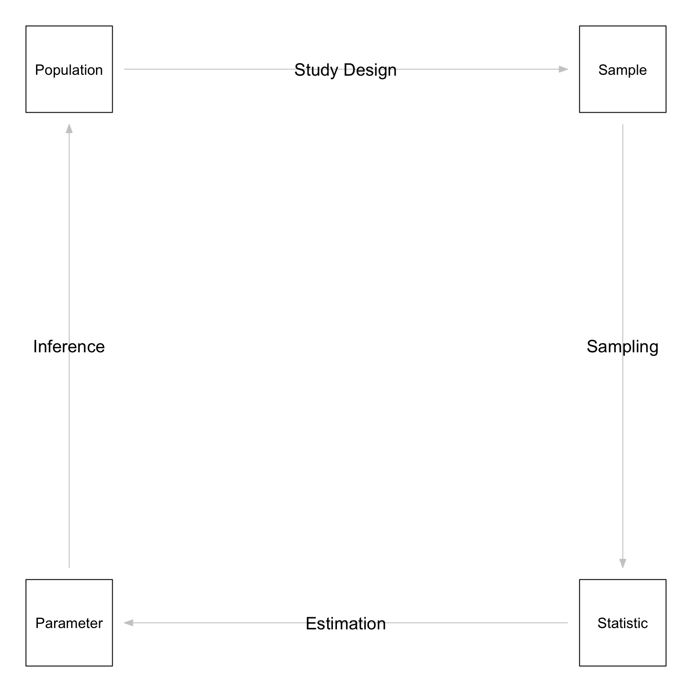

Biostatistics (DRAFT)
2021-05-26
Chapter 1 Introduction
What is biostatistics? How does it fit within the larger field of research? What will you learn from this course? These are the questions that will be addressed in this lecture.
Let’s begin with the question “What is statistics?”
There are many definitions, but they all have similar themes.
For many people (maybe even you), statistics is seen as a branch of mathematics. However, John Tukey, a famous statistician in the mid-1900’s, stated that “statistics is a science, not a branch of mathematics, but uses mathematical models as essential tools.” Just as engineering, chemistry, and economics use math as a tool but are seen as separate fields from math, so should statistics be distinguished from mathematics.
Alan Agresti and Christine Franklin have described statistics as “the art and science of learning from data” (this is also the title of their introductory statistics textbook). The goal of statistics is to translate data into understanding of the real world. At the heart of it all is the word data.
Examples of areas in which statistics is used include business, climate change research, manufacturing quality control, government policy, education, finance, and even sports (have you seen the movie Moneyball?).
1.1 Cycle of Research
Medical or public health research, like all scientific research, begins with a research question about a population of interest. Biostatistical methods are used to help answer this research question. Let’s describe this process using the Cycle of Research diagram shown here.

1.1.1 Step 1: Population to Sample
The scientific Cycle of Research begins with a population. A population is the complete set of individuals who share some common characteristics. The population is the group of people we are interested in learning about. The population of interest in a given study may be U.S. adult males, or it may be Finnish preschoolers, or it may be HIV-positive adults in South Africa. Perhaps we are interested, for example, in knowing how tall ten-year-old American boys are. The population in this case would be all ten-year-old boys in the U.S.
When we want to answer a specific question about a particular population, typically we obtain a sample. A sample is a subset of the population of interest. The sample is the group of people we actually study. This is the group of people from whom data are collected. In our example, we might randomly sample 1,000 ten-year-old boys from the U.S. population to serve as our study’s sample.
You may wonder, if the goal is to make some conclusions about the population, why not just collect data on the entire population? Samples are often studied instead of entire populations for several reasons.
One reason is cost. Often it would be too expensive and/or too time-consuming to collect data from an entire population of interest. For example, perhaps we are interested in the blood pressures of residents of Massachusetts. It would be much too expensive to obtain blood pressure measurements from every resident of the state, so we obtain a sample of residents instead. Take a careful look at this figure. Note that the samples have different numbers of people in them, and different mean (or average) diastolic blood pressure values. Also note that none of the mean values for the samples are the same as the mean blood pressure for the population. We will explore these concepts later.
Another reason for using a sample instead of the population is feasibility. Studying the entire population may simply not be possible. For example, it is not possible to determine the effect of a new treatment on an entire population of patients if the treatment is not yet available to the entire population.
A third reason is accuracy. Measurements from a study’s sample may be more accurate than measurements from a population. More time and effort can be devoted to carrying out the measurements for the smaller number of people in the sample than is feasible for an entire population. We also can’t measure everyone in the population at the same time in the same way. Measurements may change over time (as we have all seen with our weight). If we have to measure a lot of participants, we may need multiple people or instruments to do it, which can also decrease accuracy.
Finally, it may be unethical to study the entire population. If you’re administering a treatment that might be harmful or withholding a treatment that might be beneficial.
Step 1 in the Cycle of Research is to design a study in order to obtain a suitable sample from the population or populations of interest. There are a number of ways doing this. These will be discussed in more detail later in this book.
1.1.2 Step 2: Sample to Statistic
Once we have a sample, Step 2 in the Cycle of Research is to use the sample data to calculate statistics. A statistic is any number calculated from the sample data. The sample mean is a statistic. The sample variance is another statistic. In our example, we might measure the height of each boy in our study’s sample of 1,000 ten-year-old American boys and then calculate the average (or mean) height. That average height is a statistic.
1.1.3 Step 3: Statistic to Parameter
Step 3 in the Cycle of Research is to use sample statistics to estimate population parameters. A parameter is a variable which describes some aspect of the population, but whose true value is unknown. The population mean is a parameter. The population variance is another parameter. In our example, the population parameter of interest is the average height of ALL ten-year-old boys in the U.S. The true value of this parameter is unknown because it is not possible to measure the heights of all ten-year-old American boys at once.
Sample statistics can be used as estimates of the unknown population parameters. The sample mean is a good estimate of the population mean. The sample variance is a good estimate of the population variance. In our example, the mean height of the 1,000 ten-year-old boys in our study’s sample is an estimate of the true mean height of ALL ten-year-old boys in the United States.
1.1.4 Step 4: Parameter to Population
Step 4 in the Cycle of Research is to use the population parameter estimates we have obtained to infer something about the population we are interested in. Statistical inference is the process of drawing conclusions about a population on the basis of observations from a sample. In our example, we might want to know if ten-year-old American boys are taller now than they were fifty years ago. We could use the estimated true mean height of all ten-year-old American boys we obtained from our sample average in Step 3 and compare it to the value from fifty years ago. If the values were different, we could ask whether that difference is large enough to be statistically significant.
Each time a researcher poses a scientific question and the investigation is deemed worthwhile and feasible, the scientific Cycle of Research begins again.
The goal of this course is to develop your ability to do four things:
- To understand the principles behind basic statistical analyses;
- To choose appropriate statistical analyses for a given scientific context;
- To carry out statistical analyses using R or SAS and understand the resulting output; and
- To read and interpret statistical results in the literature of your field of interest.
The topics for the course will run from descriptive analyses to inferential analyses, such as confidence intervals, hypothesis tests, and linear regression.